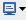
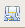
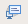
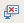

Test method debugger default console
This view shows the output of the execution of your program and enables you to enter input for the program when debugging the test method. You can execute the GDB commands as the standard input when debugging a test method. (Refer to How to debug a universal test method.)
The test method debugger default console is displayed when you start test method debugging. If it is not displayed, click the

icon and select test method debugger default.You can choose different colors for the text in the console from the preference dialog ().
The toolbar of the console contains the following icons:
Icon |
Function |
|---|---|
Terminates the process that is currently associated with the console. |
|
Removes the current paused launch. |
|

|
Removes all terminated launches that are associated with the console. |
Toggles the Scroll Lock. |
|

|
Clears the console. |
 |
Saves the content in the console to a file. |
Switches whether to display the verbose execution message in the console. |
|
 |
Switches whether the console remains in background when new outputs occur. |
 |
Switches whether the console remains in background when new errors occur. |
Forces the Console view to remain on top of other views in the window area. |
|
If multiple consoles are open, you can select the one to display from a list. |
|

|
Opens a new console. |

|
Minimizes this view. |

|
Maximizes this view. |
Functional changes
- Introduced before SmarTest 6.3.2
- SmarTest 6.5.2: Renamed to test method debugger default.